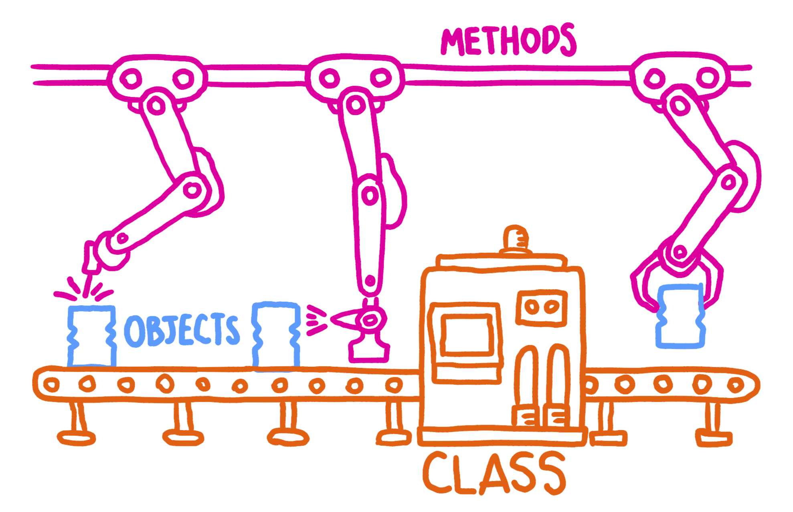

Let’s start with a function called Person. This function is a class, also called an object constructor because it provides a blueprint to create new objects. It is the conveyor belt on which are objects are made.
function Person(firstName, lastName) {
this.firstName = firstName;
this.lastName = lastName;
}Every object of class Person will accept two arguments, a string for first name and string for last name.
let maya = new Person('Maya','Gans');So now we have a whole bunch of people with first and last names. What if we want each person to be able to access a function that prints their first and last name with a greeting? This is where prototypes come in.
Our original class has two properties, and both are strings. But an object can have properties that are functions too! Here we create a function called sayHello which every person can access.
Person.prototype.sayHello = function() {
console.log(`Hello ${this.firstName} ${this.lastName}`)
}maya.SayHello()Hello Maya GansSince a prototype is an object, every new Person object now has access to this reference function. This is NOT the same as instance values like this.firstName which are not shared among objects.
If it turns out we want to be more formal with our greeting, prototypes can be modified! We can modify or add new properties to all Person objects:
Person.prototype.sayHello = function() {
console.log(`Greetings ${this.firstName} ${this.lastName}`)
}Not only can we create new objects to apply our updated function on, but even if we were to call this function on old objects the new definition of sayHello will be applied:
const jane = new Person('Jane', 'Doe');
jane.sayHello()
maya.sayHello()Greetings Jane Doe
Greetings Maya GansWe can see through this example the utility of being able to update prototypes. This doesn’t need to only be applied to objects you create, but you can import packages and modify them by creating new functions that objects can access.
However a danger to be weary of is writing over an already existing function. For instance, what if we want a new object to be less formal but we’ve already written over sayHello? For this reason, rather than overwrite functions I recommend adding functions, calling our new function greetFormal.
Another approach is to add a method to our greeting with a default value (but it can also take on their own instance properties). This can get tricky because the instance property has the same name as the prototype property.
function Person(firstName, lastName, greeting) {
this.firstName = firstName;
this.lastName = lastName;
if(greeting !== undefined) {
this.greeting = greeting
}
}
Person.prototype.sayHello = function() {
console.log(`${this.greeting} ${this.firstName} ${this.lastName}`)
}
Person.prototype.greeting = 'Hello';Now when we call sayHello it looks for an instance property called greeting. If greeting is supplied it will be used, otherwise the function will use its default value, the prototype property greeting: ‘Hello’.
let maya = new Person('Maya','Gans');
let jane = new Person('Jane', 'Doe', 'Howdy');
maya.SayHello()
jane.SayHello()Hello Maya Gans
Howdy Jane DoeWe can delete an instance value for a single person so that they return the default by writing delete jane.greeting
delete jane.greeting;
jane.sayHello()Hello Jane DoeMost things in JavaScript have a prototype [including functions, objects, classes, numbers, and boolians]. A prototype is an object which has properties and values, and the value of that property will also have a prototype (see: Person.prototype.sayHello.prototype)
firstName, lastNamesayHello, greetingsayHello